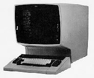

IBM Terminals

IBM 3278 Display Console
You are standing in a clearing in the Great Blue forest. Before you
is a tree representing video-terminal products made by International
Business Machines.
The tree's
first branch emerges low on the trunk--where it almost hangs down
into the mulch of punchcard
chad.
This old branch has the cryptic initials EBCDIC carved into it in a style that looks vaguely
like the transit numbers on a check.
The
second branch is not as hoary, and seems to have been grafted onto the
trunk, higher up. The tattered red-white-and-blue remains of an
American flag are tangled into the twigs, near what may have been an
eagle's nest.
At the top of the tree, there is
a new branch,
green and leafy, but with sprouts intertwined in an intricate pattern.
There is an old camp stool here.
Perhaps to your surprise, there are no mice here.
The page you are viewing concentrates on the particular features of IBM
terminals and emulations of them. For information that applies in general
to all video terminals, see the
general information page.
IBM Terminal Information from the Archives...
- Concerning IBM's EBCDIC-speaking terminals.
(Such as models 3270, 3278, 5250, 3179, 3191, 3192, etc.)
- Chart of EBCDIC codes (GIF)
- Your IBM terminal may send and receive in block mode....
- Concerning IBM's ASCII-speaking terminals.
(Such as models 3101, 3151, 3153, 3161, 3163, etc.)
- How to setup and reset the IBM 3151 terminal.
- Termcap entries for the 3151/3161 ASCII terminals.
- About IBM keyboards: on the PC/AT and other equipment.
- General discussion of (mostly EBCDIC) data communication in the IBM world.
Software:
Other Internet Resources
Links to vendor pages.
A partial list of dealers who sell new and used video terminals is
here.
Some vendors of terminal-emulation software for PCs and Macintoshes
have been claiming to "support"
3270 terminal emulation--when what
the product actually supports is mere emulation of a Televideo
terminal with a special keymap that a protocol converter has to interpret.
(The protocol converter also gets to do the tricky work of the
ASCII-to-EBCDIC code translation and
asynchronous/bisynchronous communication bridging.) In some environments, this
setup is what you want, but sometimes you want these functions handled within
the PC--as other products do. Just be certain of what you are getting!
- SAS Institute (Emulus 3270 vector-graphics emulator for X Windows)
- Perle Systems (midrange controllers, servers)
- OpenConnect Systems (DynaComm tn3270; VSE, MVS software)
- Computer Network Technology/Brixton (Enterprise/Access)
- Brixton PU2.1 SNA Server for Solaris (alebra.com)
- Eicon Technology, Inc. (Aviva 3270 emulation for Windows-95/NT)
- SimWare, Inc. (SimPC, SimMac, A2B, Salvo 3270-to-HTML)
- Mitem Corporation. (middleware for terminal interface retrofit)
- Attachmate Corporation (terminal emulation, host software)
- NetManage, Inc. (Chameleon, Swift, TN3270 vendor)
- Zephyr Corporation (Passport TN3270E Client for Windows 95/NT)
- VicomSoft (vendor of
MacOS Terminal Emulation)
- Databeast
(dataComet shareware Telnet/tn3270/scripting for Macintosh)
- Mocha Pocket TN3270 (for Palm OS)
- IBM WebSphere Host-on-Demand
(SSL-based telnet sessions from web browser)
- Forest Computer (scrape screen to view output on Web browser)
- Computer Software Manufaktur Remote Login for Windows (demo, 3151)
- Better On-Line Solutions (5250 emulation, twinax hardware)
- ConnectTronix Corporation (BATM: 5250 connectivity)
- Blue Emulations, Inc. (BluVista 3151 emulation for Win9x and CE)
- Andrew Corporation
- Forvus Research, Inc. (PCI-bus and USB 3270 Host-access solutions;
30-day evaluation available)
- Data Interface Corporation (TN3270, bisync protocol conversion)
- Farabi Technology Corporation (5250/twinax adapters)
- Black Box Corporation (data communication vendor)
- CQ Computer Communications, Inc. (bisync, SNA, SDLC)
- UniKix was acquired by PeerLogic, which itself was bought by
Critical Path;
offered
InJoin Trans CICS emulation
and
Path3270/Connect)
- I/O Concepts (X-Direct: Unix to mainframe, 3270 WebSession)
- Protech Consulting Inc.
- StarQuest Software offers
Client Access for Unix/Linux emulating the IBM 5250.
- Productivity Systems Inc. (emulates IBM 3164 Color ASCII terminal)
- The Workstation Group, Ltd. (no terminals: IBM-to-Unix tools)
- IBM REXX stuff
- Midrange Computing
Internet RFCs (Requests For Comments)
Some effort was made in the late 1990s to improve the "tn3270" method of
connecting IBM 3270 and 5250 terminals to hosts via TCP/IP. Read about it
here.
Usenet Sources
You can access these newsgroups only if your Web browser is configured
to read news from a news-server computer that receives them.
The following trademarks are claimed by IBM:
- MVS
- Think
- Gearbox
- Helpdesk
(return to Video Terminal index page)
(Is there a problem with this page?)
Introductory material copyright © 1995
and archive contents collection copyright
© 1995, 1999, 2003 Richard S. Shuford.
This page's
 count says that you are visitor number
count says that you are visitor number
 since 2003-04-23.
since 2003-04-23.
Camp Stool
There is a use for the camp stool. If your boss has just told you
that you've got to write a 3270 emulator program on a rush schedule,
and you are still puzzled about what "EBCDIC" means, then the stool is
to sit on and take deep breaths for a minute before you go on.
While you're resting, I might as well mention that it stands for
Extended Binary-Coded-Decimal Interchange Code. Have a look at
it.
While you are breathing, you could download some
EBCDIC conversion tools. Enjoy the
green lightning while you are here. And ponder
the computing days of yesteryear,
when EBCDIC was spawned for use on
80-column punched cards
but migrated to
other mechanisms. And perhaps you can wish that
Mel
was here to help you!
Well, Mel is no longer on the scene, but at least one interesting
development has lately occurred:
an EBCDIC version of the Apache Web Server software!
Click
here when you are ready to go on....
{kind=link}
{kind=link}